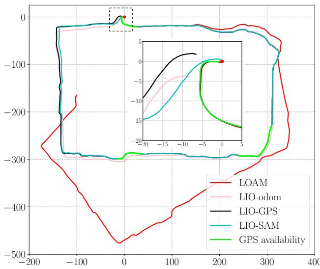
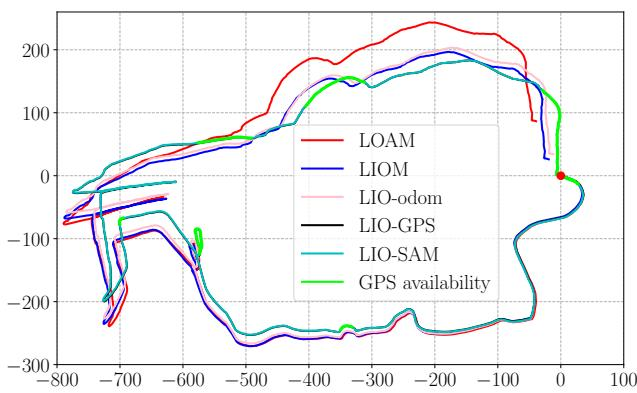

原图注（Fig. 1）：The system structure of LIO-SAM. The system receives input from a 3D lidar, an IMU and optionally a GPS. Four types of factors are introduced... (a) IMU preintegration factor, (b) lidar odometry factor, (c) GPS factor, and (d) loop closure factor.（系统结构；输入来自 3D 激光、IMU、可选 GPS；四类因子：IMU 预积分、激光里程计、GPS、回环。）
怎么看这张图：这是全篇总图，也是本课的骨架。中间一排圆形是机器人状态节点 $x$，四种颜色的边分别接在节点上——蓝＝IMU 预积分、绿＝激光里程计、橙＝GPS、红＝回环。读者先把这张图记牢，后面每一节就是展开其中一种因子。
原文明说：「applying IMU preintegration also naturally gives us one type of constraint for the factor graph — IMU preintegration factors... The IMU bias is jointly optimized alongside the lidar odometry factors.」也就是说预积分残差直接当因子，偏置和激光因子一起被联合优化。GPS 因子更谨慎：只有当激光惯性的漂移估计协方差大于 GPS 自身协方差才插入（因为激光惯性漂移增长很慢，乱插反而坏事）。
关键帧怎么选：位姿变化超过阈值（平移 > 1 m 或旋转 > 10°）才插入一个关键帧，两关键帧之间的帧直接丢弃。
滑动窗多大：取最近 n = 25 个关键帧作子关键帧，变到世界系拼成固定大小的体素地图 $M_i=\{M_i^e(0.2\text{ m}),M_i^p(0.4\text{ m})\}$。
旧关键帧怎么处理：新关键帧只和这固定 25 个匹配；老节点离开窗口后由 iSAM2 的贝叶斯树自动边缘化为先验。原文摘要：「we marginalize old lidar scans for pose optimization, rather than matching lidar scans to a global map」。
原图注（Fig. 3）：Mapping results of LOAM and LIO-SAM in the Rotation test. LIOM fails to produce meaningful results.（Rotation 测试中 LOAM 与 LIO-SAM 的建图；LIOM 失败。）
怎么看这张图：对比几种方法在剧烈旋转下的建图质量。LIOM（2019 那篇）直接失效，LIO-SAM 仍给出一致结果——说明四类因子+滑动窗在激进旋转下更稳。注意这是「Rotation 测试」，对应 Table IV 里 41.9 ms 的单帧耗时。

原图注（Fig. 5）：Results of various methods using the Campus dataset... The red dot indicates the start and end location. The trajectory direction is clock-wise. LIOM is not shown because it fails to produce meaningful results.（MIT 校园数据集；红点是起终点；顺时针；LIOM 因失败未画出。）
怎么看这张图：红点代表起点也是终点——看哪种方法的轨迹首尾真正闭合。LIO-SAM 的轨迹贴合真实环路，红点处闭合良好，这正是回环因子在起作用（呼应本课封面图的红边）。

原图注（Fig. 6）：Results of various methods using the Park dataset... The red dot indicates the start and end location.（Pleasant Valley Park 数据集；红点＝起终点。）
怎么看这张图：Park 是 LIO-SAM 误差最低的数据集（端到端平移误差 0.04 m）。对比 LOAM/LIOM 的发散轨迹，LIO-SAM 的环路闭合最干净，和 Table II/III 的数字互相印证。